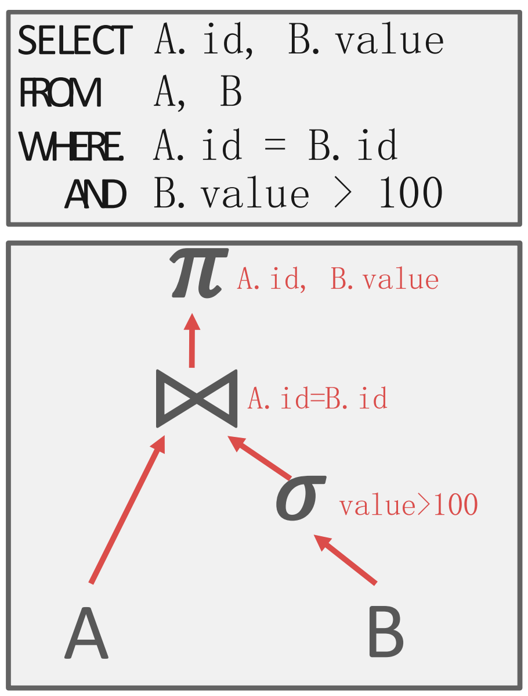
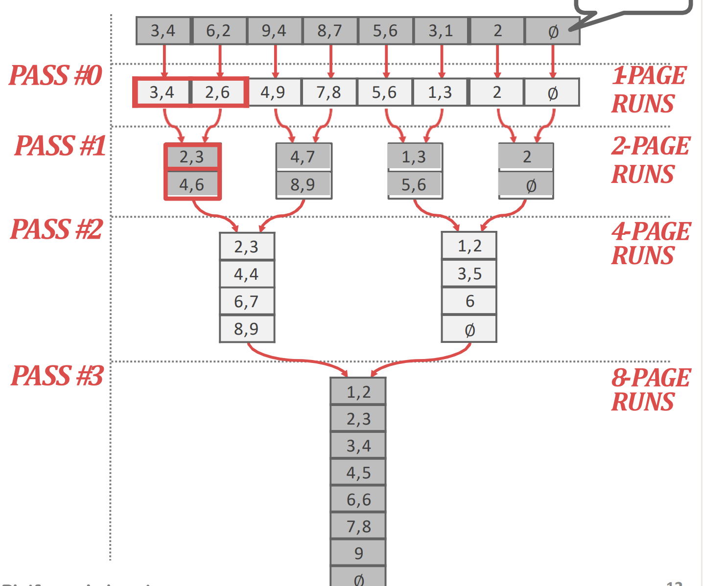
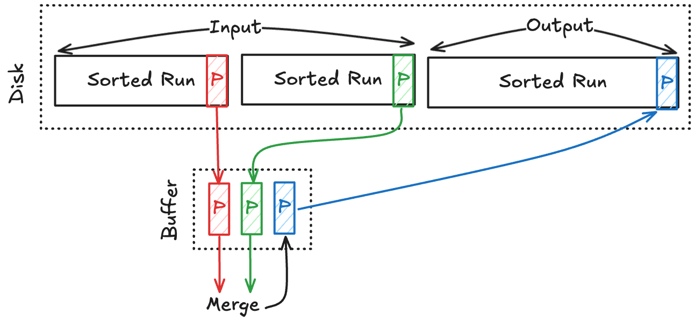
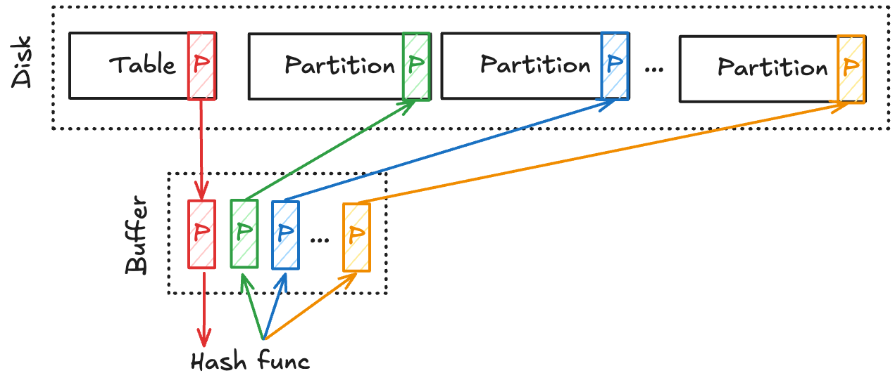
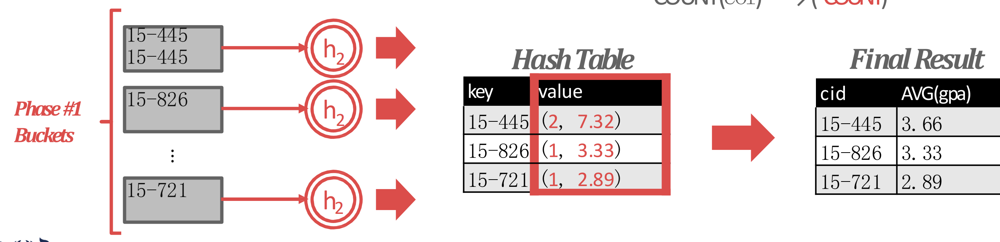

서울대학교 데이터사이언스대학원 정형수 교수님의 "데이터사이언스 응용을 위한 빅데이터 및 지식 관리 시스템" 강의를 필기한 내용입니다.
Query plan
- Query plan 은 operation 할 계획을 수립하는 것을 말하는데

- 이렇게 tree 모양으로 생겼다.
- 각 operation 들이 node 이고, edge 는 data 흐름이다.
- 즉, query plan tree 에서 bottom-top 으로 처리되고 root node 의 결과가 query 의 결과이다.
Operation consideration for disk-oriented DBMS
- Query 의 input (table), intermediate processing, output 까지의 데이터 크기가 memory 상에 다 들어갈 수 있으면 좋겠지만, 당연히 그렇지 않다.
- 따라서 여기에서는 기존에 알고 있던 sorting 과 hashing 을 확장시켜, data 가 memory 에 다 들어오지 않더라도 중간중간 disk 로 내리며 이 연산들을 수행해내는 방법을 배울 것이다.
- 이렇게 disk 와 협력하며 sort, hash 를 하는 것을 external 을 붙여 external sorting, external hashing 이라고 한다.
External sorting
- 일단 DBMS 에서 sorting 이 필요한 이유는
- 말 그대로
ORDER BYclause 에 대응하기 위해 (sorting aggregation) - 아니면
GROUP BY나DISTINCT와 같은 dedup 에도 sorting 을 활용할 수 있다. - 참고로
JOIN에도 사용할 수 있다고 한다 (range predicate JOIN).
- 말 그대로
- External sorting 에서는 merge sort 를 확장한 way merge sort 를 한다.
- 위 그림 깔끔하게 잘그렸네
- merge sort 복습: divide (가장 작은 단위까지 나누고) and conquer (합치면서 sorting)
- 일단 연산에 사용되는 단위부터 알아보자.
Sorted run
- Key-value 에서
- Key 는 sort 의 기준을 말하고
- Value 는 tuple 을 가리키는데 tuple data 를 모두 넣을 수도 있고 (early materialization), RID 를 넣을 수도 있다 (late materialization).
- Late materialization 은 memory consumption 이 적다는 장점이 있지만 tuple data 를 같이 봐야하는 query 의 경우에는 tuple 을 찾으러 IO 를 해야 하기 때문에 이런경우에는 early 가 좋다
- 어떤 방식으로 할지는 optimizer 가 결정한다고 한다.
- Run: List of key-value pair
- Sorted run: Key 를 기준으로 정렬된 list of key-value pair
- 이놈을 만드는 방법을 간단하게 스포하면:
- List 를 memory 에 fit 되는 사이즈로 나눠 memory 로 올린 다음에 각 단위를 in-memory sort 한 다음 파일로 저장하면 sorted run 이 된다.
2-way external merge sort

- 일단 K-way merge sort 라는 것은 한번에 K 개를 merge 하여 sorting 하는 것을 의미한다.
- 즉, 보통 알고 있는 것은 2-way merge sort 인 셈.
- 이놈에 대해 설명하기 전에, 일단 2-way merge sort 를 external 하게 수행하는 것은 어떻게 하는지 알아보자.
- 일단 pass 0 와 pass 1~n 으로 구분된다.
Pass 0
- 이 pass 는 sorted run 들을 생성하는 단계이다.
- Table 에는 개의 page 가 있고 이것을 개의 buffer 로 정렬한다고 했을 때
- 한번에 개의 page 를 읽어 정렬한 다음, 하나의 sorted run (file) 로 저장한다.
- 이 작업을 table 전체에 대해 수행하면, 결국에는 개의 sorted run 들이 생성된다.
Pass 1~n

- 그리고 이 pass 에서는 sorted run 들을 2-way merge 한다.
- 여기서는 다음과 같은 방식으로 진행한다.
- 일단 buffer 2개에 2개의 sorted run 으로 부터 가져온 page 두개를 올린다.
- 그리고 output buffer 를 하나 구비하고, 저 두 page 를 merge 하여 이 output buffer 에 채운다.
- Output buffer 는 다 찰때마다 output sorted run (file) 에 flush 한다.
- 이렇게 page 두개를 merge 했으면 또 다시 두 sorted run 으로부터 각각 하나씩 page 를 읽어들여 merge 를 한다.
- 따라서 이때 필요한 buffer 는 3개면 된다.
- 이와 같은 과정으로 모든 sorted run 들을 merge 하여 사이즈가 2배가 된 새로운 output sorted run 들로 만드는 것이 하나의 pass 이다.
- 따라서 pass 의 수는 이 된다.
IO count
- 그럼 이때 발생하는 IO 의 횟수를 알아보자.
- 각 pass 는 번의 IO 가 발생한다.
- 왜냐면 일단 pass 0 에서는 모든 page 들을 읽어들여 (-read) 정렬해서 sorted run 으로 바꾼 것이기 때문에 사실상 배치만 바뀐 것이지 write 하는 양은 동일하다 (-write).
- 그리고 pass 1~n 의 경우에도 모든 page 들을 읽어들여 (-read) merge 해서 2배 사이즈의 sorted run 으로 바꾼 것이기에 사실상 write 하는 양은 여전히 개의 page 이다 (-write).
- 따라서 pass0 와 개의 pass 들 각각에 대해 의 IO 가 있는 것이어서
- 총 번의 IO 가 발생한다.
K-way external merge sort
- 그럼 이것을 로 generalize 시켜보자.
- 일단 pass 0 에서는 동일하다. 개의 sorted run 을 만든다.
- Pass 1~n 에서는 B-1 way merge 를 한다.
- 왜 B-1 이냐: 위의 2-wat external merge sort 에서 필요한 buffer 가 3 개인 것을 생각하면, 개의 buffer 로 수행할 수 있는 way 의 수는 당연히 이 되는 것.
- B-1 way merge 도 위에랑 별 다를 바가 없다:
- 일단 개의 buffer 에는 각 run 들에서 가져온 page 들을 담고 (input buffer),
- 나머지 1개의 buffer 는 output buffer 로 사용한다.
- 그래서 이 input buffer 들을 merge 해서 output buffer 에 담고
- 이것을 쭉 해서 output buffer 가 다 차면 flush
- 이 방식을 사용하면 이 sorted run 들을 page 단위로 sequential access () 하면 끝난다.
- 따라서 동일한 이치로 pass 1~n 의 pass 개수는 가 된다.
- 2-way merge 에서 작은놈 고르는 것은 그냥 compare 로 가능한데 k-way 면 어떡하냐:
- heap 을 사용한다.
Buffer limit
- 당연히 이때 buffer 를 사용하기 때문에 이런 internal operation 을 위한 buffer 의 개수를 제한해놓는다.
- 대부분의 DBMS 들 (가령 Postgres) 에서는 이 값들을 config 로 노출해놓는다.
- 이걸 제한하지 않으면 서로 요구하는 buffer 가 많아져 메모리가 부족해지고, e2e 성능이 줄어들 수 있다.
- 이것을 overcommit 이라고 한댄다.
- 또한 page 사이즈를 줄이면 page 개수가 많아지므로 path 가 줄어 성능이 빨라질 수 있다.
- 당연히 근데 IO 단위가 줄어드니까 IO 측면에서는 부담이긴 하다.
Double buffering optimization
- 이건 buffer 을 두개씩 사용하는 것인데,
- 한 buffer 를 처리하는 동안 background worker 가 다음 run 을 미리 prefetch 하는 latency hiding 방법이다.
Index sort
- 이런 생각을 할 수도 있다: index 는 이미 sorting 되어 있으니까 그냥 이거 쭉 읽으면 안되나?
- 당연히 된다. 다만, 이 index 가 clustered 되어 있어야 한다.
- 이때에는 그냥 index 로 scan 을 해버리면 정렬이고 뭐고 할거 없이 그냥 sequential access 로 끝난다.
- 근데 unclusted 상태라면, index 순으로 읽으면 거의 tuple 당 page IO 가 발생하고 (WAF), random access 이기 떄문에 대부분의 경우 성능이 구리다.
External hash
- 이전에 배운 static, dynamic hash table 은
JOIN을 위한 것이고, - 여기서의 hash table 은
GROUP BY나DISTINCT에 대응하기 위한 “임시 (ephemeral)” hash table 이다.- 즉, table scan 을 하는 와중에 같이 생성할 수 있는 hash table 이고
- Sorting 이 필요 없는 dedup 만이 목적이라면 sorting 보다 hashing 이 일반적으로 더 좋다고 한다.
- Sorting 에서 merge 는 그냥 sequential 하게 읽으면 됐지만 hash 는 uniform func 이기 때문에 random access 가 되어 처음에 저장할때부터 hash-friendly 하게 저장한다.
- 여기서 저장이라는 것은 앞서 배운 heap file 와 같은 storage layout 보다는
- 임시로 disk 에 flush 할 때 그렇게 한다라는 의미로 받아들이면 된다.
- 그래서 이것은 2개의 phase 로 진행된다:
Phase 1

- 개의 page 로 된 table 에 대해, 개의 buffer 를 사용한다라고 하면
- 일단 1개의 buffer 는 input buffer 로 사용한다. 즉, table 의 page 를 하나씩 여기다 올림
- 그리고 개의 buffer 가 output buffer 이다.
- 이놈을 bucket 라고 생각하면 되는데,
- Hash func 를 돌려 을 해서 나온 값 (digest) 에 맞는 buffer 에 저장한다.
- 즉, 하나의 buffer 에는 같은 hash func result 를 가지는 애들만이 저장된다.
- 그리고 이 buffer 가 다 차면 flush 를 해준다.
- 그래서 이 같은 digest 를 갖는 애들을 partition 이라고 부른다.
- 즉, dynamic hash 에서 chain hash 로 생각하면, bucket chain 이 하나의 partition 인 것.
- 여기서 partition-wide 로는 duplicated key 가 없다고 한다: hash 시 같은 결과가 나오는 애들끼리 같은 parition 으로 묶어놨으니까
- 그리고 이 partition 들은 전부 memory 에 올릴 수 있는 사이즈여야 한다.
- 왜냐면 이것을 가지고 phase 2 에서 in-memory hash table 를 빌드할 수 있기 때문.
- Partition 하나의 page 개수는 이 되고 이것이 내에 들어와야 하기 때문에,
- 즉, 를 만족하는 는 여아 한다.
- 만약 이게 불가능하다면 level 을 여러개 사용하는 수도 있다고 한다.
- 이때의 buffer 사이즈는 join buffer config 로 조정한다고 한다.
Phase 2
- 그 partition 내에서 다른 hash func 를 가지고 in-memory hash table (rehash) 를 해서 lookup 에 사용하는 것.
Hashing summarization

- 이것으로
GROUP BY+ aggregation 을 처리하는 방법을 알아보자. - 어떤 search key (즉,
GROUP BY의 값) 으로 모든 partition 을 돌며 이 key 와 같은 값을 전부다 모아서key, {values}를 entry 로 하는 hash table 을 빌드한다. - 그리고 각 entry 의
{values}에 aggregate 를 하면 결과가 나오게 되는 것.